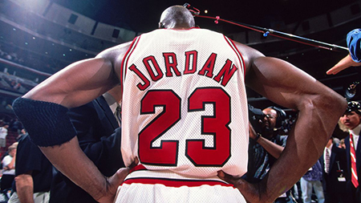

There are many players throughout NBA History who make a great argument for greatest player of all time, these players include the following (In No Particular Order):
Kareem Abdul-Jabbar
Wilt Chamberlain
Magic Johnson
Oscar Robertson
Tim Duncan
Bill Russell
Kobe Bryant
Larry Bird
Shaquille O'Neal
75th Anniversary Video
This video shows the full 75th Anniversary Team.
LeBron James
Lebron James, even at his age now, is still one of the fastest in the NBA and is well known for his incredible strength and agility. He is the only player in NBA History to be Top 100 for points, assissts, rebounds, blocks, three pointers, and steals. He is an 18 NBA All-Star, and has competed in 10 NBA Finals contests, although he would only win 4 titles. This glaring flaw is the difference maker between him and the greatest NBA Player of all time.
Michael Jordan

Jordan is widely regarded as the greatest basketball player of all time -- he changed so many different facets of the league -- but maybe most of all, he showed players they could grow themselves into a global brand on and off the floor with stellar play and the right marketing machine behind it all. Jordan revolutionized the way players could expand their corporate portfolios -- and dominate well after their playing careers end. Oh yeah: Along the way, he was a six-time NBA Finals champ, six-time NBA Finals MVP, five-time NBA MVP and 14-time NBA All-Star.